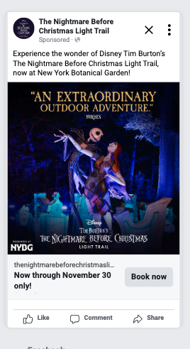
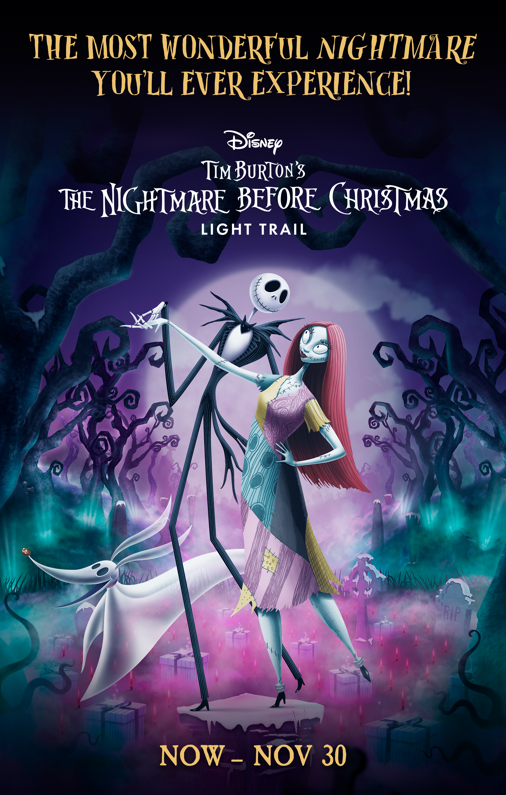
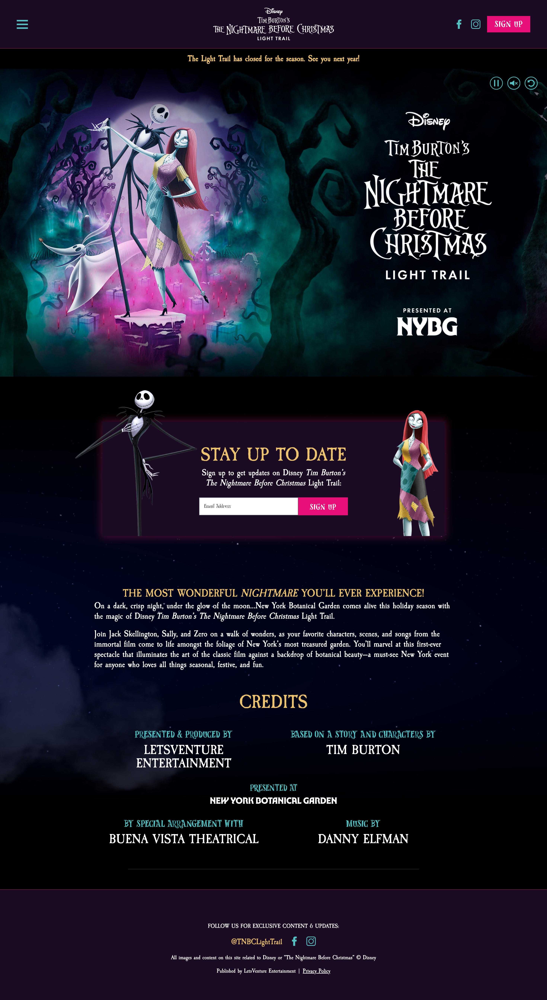
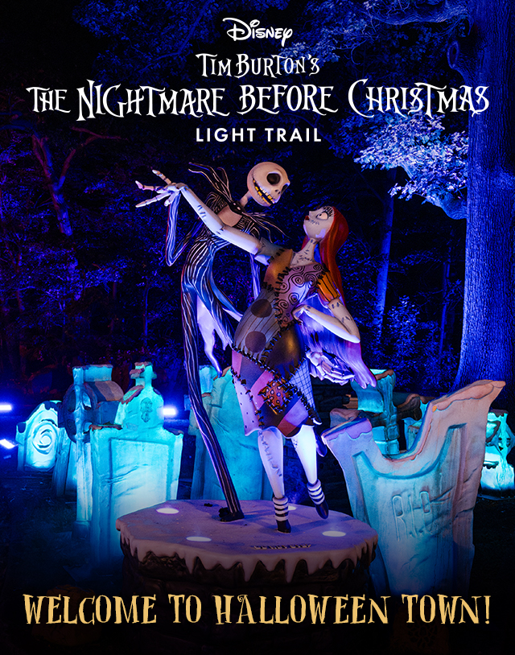
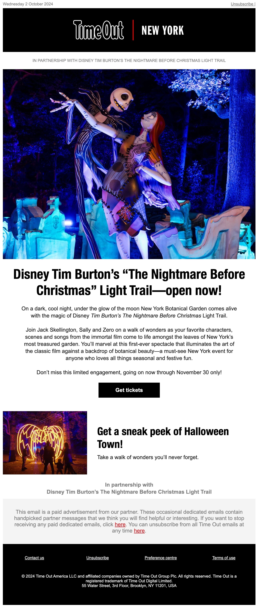
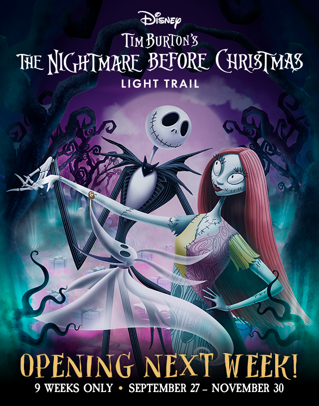
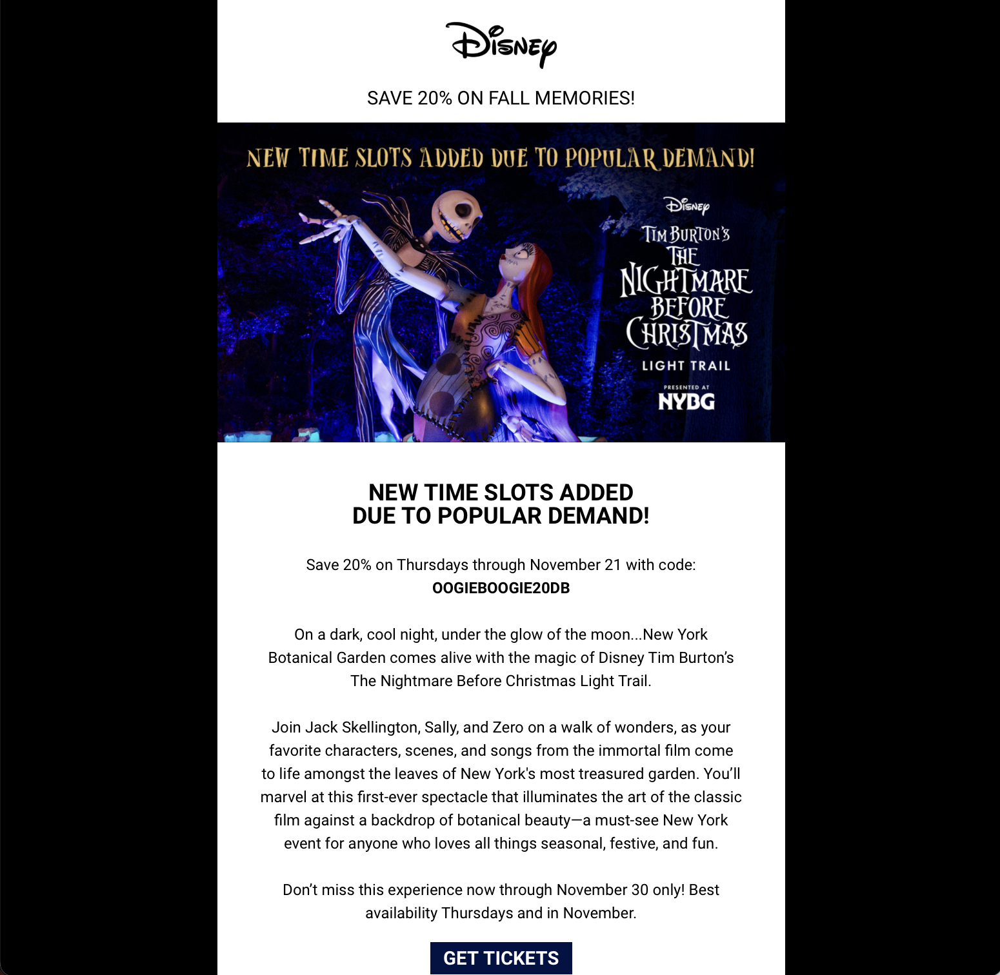

The Nightmare Before Christmas Light Trail was an immersive experience at New York Botanical Garden in collaboration with Disney and Tim Burton to celebrate the cult film.
As a Copywriter with the agency RPM, I worked on marketing and advertising content leading up to the launch and then throughout the run of the experience.
I created paid social ads, video scripts, web copy (including ticketing and FAQ), email marketing, influencer and partner content, OOH/signage, Google search copy, and more.
The experience was so popular with fans that it was extended from its initial run through Halloween and the holiday period.






